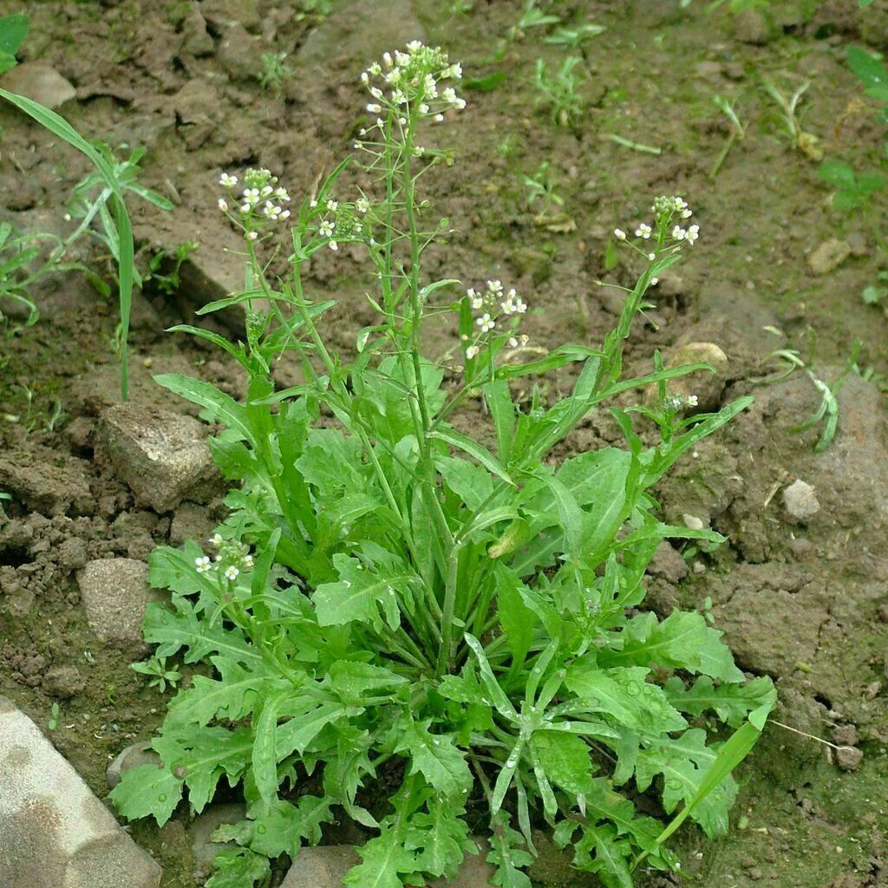

Ayuntamiento de Senés
JARDIN BOTANICO DE ESPECIES AUTOCTONAS DE SENES

Capsella bursa-pastoris

Las bolsas del pastor (Capsella bursa-pastoris) es una planta herbácea anual muy común en campos, caminos y zonas cultivadas del ámbito mediterráneo. Su nombre popular proviene de la forma característica de sus frutos, que recuerdan a pequeñas bolsas o corazones invertidos.
Presenta un porte erguido, que puede alcanzar entre 10 y 50 cm de altura. Sus hojas basales forman una roseta, mientras que las superiores son más pequeñas y estrechas. Sus flores son pequeñas, de color blanco, agrupadas en inflorescencias alargadas.
Las bolsas del pastor se distribuyen por casi todo el mundo, especialmente en regiones templadas. Crecen en suelos alterados, bordes de caminos, cultivos y zonas urbanas.
En la Sierra de los Filabres y en el entorno de Senés, es una planta muy frecuente, apareciendo de forma espontánea en primavera en campos y caminos.
Las bolsas del pastor han sido utilizadas tradicionalmente por sus propiedades hemostáticas, es decir, para detener hemorragias. También se le atribuyen propiedades astringentes y antiinflamatorias.
En medicina popular, se ha empleado en infusiones para tratar pequeñas hemorragias y problemas circulatorios.
Esta planta simboliza la abundancia y la sencillez, debido a su gran capacidad de expansión y a su presencia constante en el entorno humano.
Sus frutos en forma de bolsa han dado lugar a su nombre popular y a su asociación con la vida rural.
En Senés, esta planta era conocida como "rasericas". Las utilizaban los niños para sus juegos
También se ha utilizado en remedios tradicionales, rica en vitamina k, buena para cortar las hemorragias, es antibacteriana.
Las bolsas del pastor florecen principalmente en primavera, aunque pueden hacerlo durante gran parte del año en condiciones favorables.
Es una de las plantas más extendidas del mundo, adaptándose a una gran variedad de condiciones ambientales.
Sus frutos en forma de corazón son una de sus características más distintivas y fáciles de reconocer.